La curva de entrenamiento mezcla escenarios distintos y exploración; la validación usa los mismos casos. Una pérdida menor no implica una política mejor, y pérdidas/Q con distinto gamma no tienen la misma escala objetivo. *La pérdida usa escala logarítmica, lineal cerca de cero (±10⁻⁸), sin ocultar ceros. El suavizado es retrospectivo, usa solo valores disponibles y conserva los datos originales; no es un intervalo de confianza. Las líneas de reanudación marcan continuidad del mismo entrenamiento, no una semilla nueva. Las colas excluidas mediante end_episodes se conservan en los CSV originales; no entran en las curvas ni en los bloques. Una meseta visual no prueba convergencia. Comparar también focos, errores y recorrido, incluyendo deterioros. Son escenarios sintéticos y una semilla por brazo; no demuestran desempeño físico ni beneficio sanitario. El replay histórico final sigue pendiente y no se usa aquí. Recompensas y varianzas de estimadores distintos se grafican por separado: sus valores nativos no son una escala común de calidad.
| Ejecución | Gamma | Episodios | Objetivo declarado | Ticks | Adam | Acciones inválidas | Reanudaciones | Episodios de colas excluidas |
|---|---|---|---|---|---|---|---|---|
| Gamma 0,99 | 0.99 | 2000 | 2000 | 71984 | 71876 | 0 | 1000 | 0 |
| Gamma 0,5 | 0.5 | 2000 | 2000 | 71979 | 71871 | 0 | — | 0 |
| Adaptativo · 30 000 episodios | 0.99 | 30000 | 30000 | 1079858 | 1079750 | 0 | 20000 | 0 |
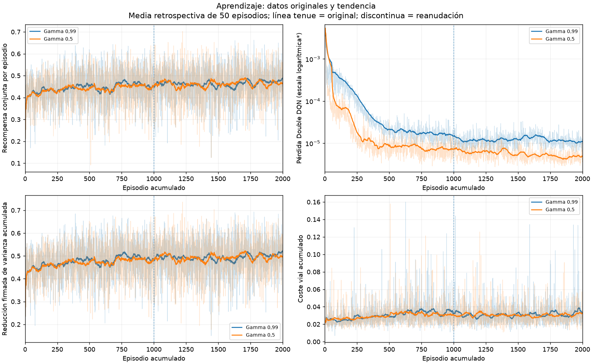
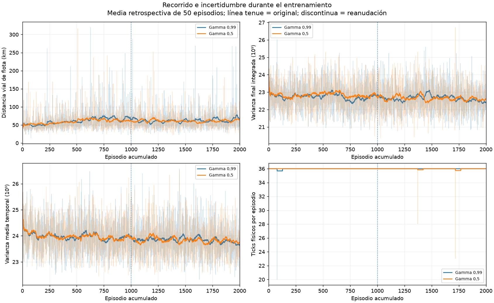
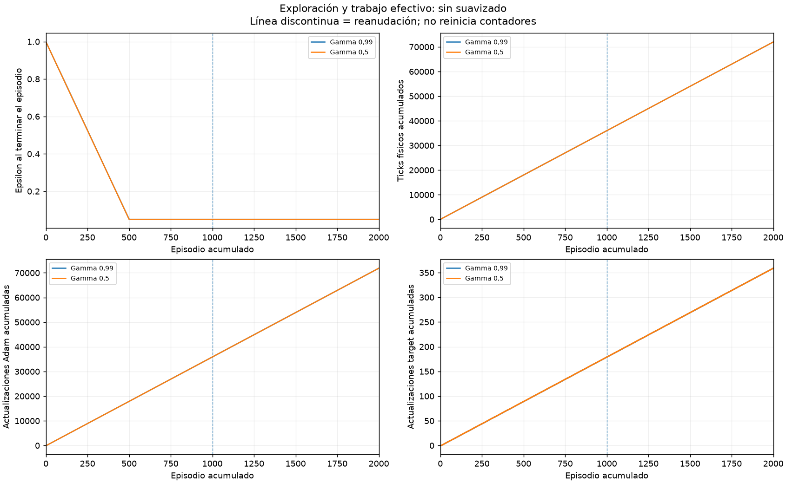
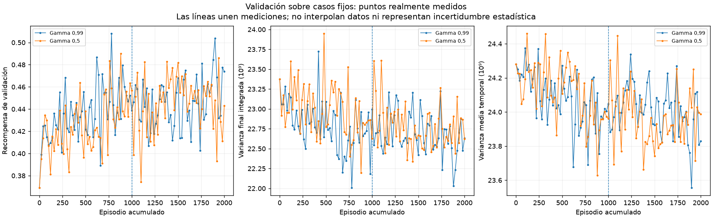
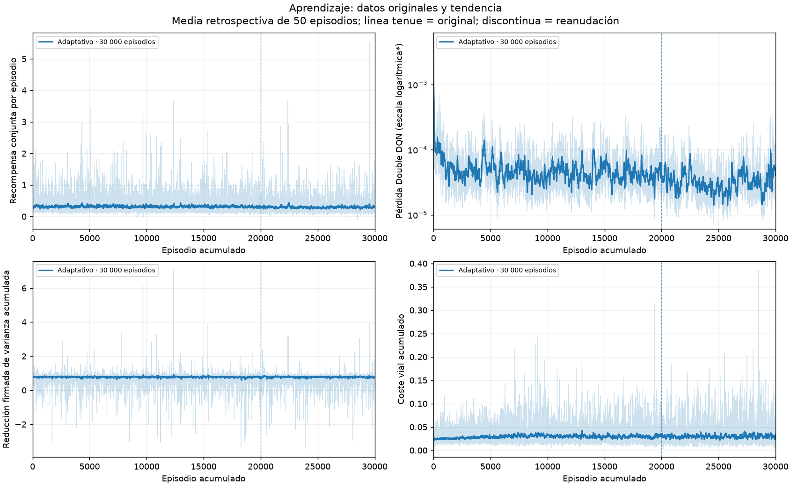

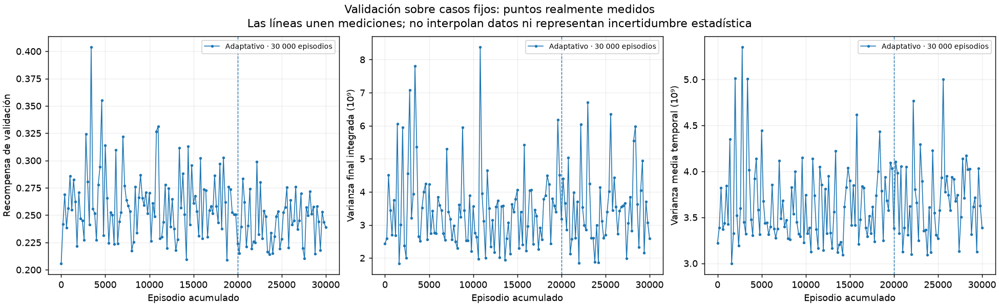
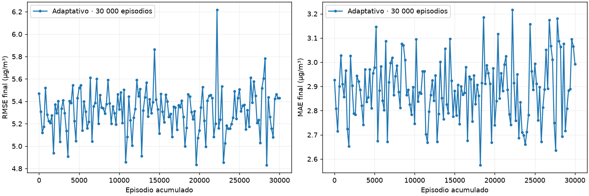
No confundir medias de entrenamiento con validación. Tabla completa CSV.
| Ejecución | Desde | Hasta | Recompensa entrenamiento | Pérdida | Varianza final validación | Validaciones | Recorrido entrenamiento (m) |
|---|---|---|---|---|---|---|---|
| Gamma 0,99 | 1 | 200 | 0.4282 | 0.0004319 | 2.3e+10 | 10 | 4.917e+04 |
| Gamma 0,99 | 201 | 400 | 0.443 | 7.307e-05 | 2.28e+10 | 10 | 5.729e+04 |
| Gamma 0,99 | 401 | 600 | 0.445 | 2.189e-05 | 2.292e+10 | 10 | 6.061e+04 |
| Gamma 0,99 | 601 | 800 | 0.4549 | 1.799e-05 | 2.249e+10 | 10 | 6.912e+04 |
| Gamma 0,99 | 801 | 1000 | 0.4578 | 1.599e-05 | 2.276e+10 | 10 | 6.701e+04 |
| Gamma 0,99 | 1001 | 1200 | 0.4655 | 1.185e-05 | 2.272e+10 | 10 | 6.103e+04 |
| Gamma 0,99 | 1201 | 1400 | 0.4608 | 1.197e-05 | 2.276e+10 | 10 | 6.046e+04 |
| Gamma 0,99 | 1401 | 1600 | 0.4521 | 1.31e-05 | 2.277e+10 | 10 | 6.138e+04 |
| Gamma 0,99 | 1601 | 1800 | 0.4652 | 1.285e-05 | 2.268e+10 | 10 | 6.367e+04 |
| Gamma 0,99 | 1801 | 2000 | 0.4769 | 1.109e-05 | 2.253e+10 | 10 | 6.345e+04 |
| Gamma 0,5 | 1 | 200 | 0.4239 | 0.000207 | 2.314e+10 | 10 | 5.197e+04 |
| Gamma 0,5 | 201 | 400 | 0.4408 | 1.265e-05 | 2.298e+10 | 10 | 5.598e+04 |
| Gamma 0,5 | 401 | 600 | 0.4397 | 8.595e-06 | 2.308e+10 | 10 | 6.233e+04 |
| Gamma 0,5 | 601 | 800 | 0.4462 | 7.969e-06 | 2.289e+10 | 10 | 6.41e+04 |
| Gamma 0,5 | 801 | 1000 | 0.4516 | 7.337e-06 | 2.279e+10 | 10 | 6.227e+04 |
| Gamma 0,5 | 1001 | 1200 | 0.4617 | 6.291e-06 | 2.296e+10 | 10 | 6.23e+04 |
| Gamma 0,5 | 1201 | 1400 | 0.4536 | 6.458e-06 | 2.278e+10 | 10 | 6.155e+04 |
| Gamma 0,5 | 1401 | 1600 | 0.465 | 5.462e-06 | 2.263e+10 | 10 | 5.946e+04 |
| Gamma 0,5 | 1601 | 1800 | 0.4696 | 5.148e-06 | 2.273e+10 | 10 | 5.967e+04 |
| Gamma 0,5 | 1801 | 2000 | 0.4636 | 4.681e-06 | 2.274e+10 | 10 | 6.276e+04 |
| Adaptativo · 30 000 episodios | 1 | 200 | 0.3072 | 0.0002174 | 2.591e+09 | 1 | 4.863e+04 |
| Adaptativo · 30 000 episodios | 201 | 400 | 0.34 | 0.0001134 | 4.508e+09 | 1 | 4.901e+04 |
| Adaptativo · 30 000 episodios | 401 | 600 | 0.3239 | 0.0001055 | 3.45e+09 | 1 | 4.916e+04 |
| Adaptativo · 30 000 episodios | 601 | 800 | 0.2913 | 7.642e-05 | 2.701e+09 | 1 | 5.002e+04 |
| Adaptativo · 30 000 episodios | 801 | 1000 | 0.3088 | 7.11e-05 | 3.758e+09 | 1 | 5.06e+04 |
| Adaptativo · 30 000 episodios | 1001 | 1200 | 0.2983 | 4.354e-05 | 2.682e+09 | 1 | 5.035e+04 |
| Adaptativo · 30 000 episodios | 1201 | 1400 | 0.295 | 4.246e-05 | 6.06e+09 | 1 | 4.987e+04 |
| Adaptativo · 30 000 episodios | 1401 | 1600 | 0.3076 | 5.977e-05 | 1.83e+09 | 1 | 4.961e+04 |
| Adaptativo · 30 000 episodios | 1601 | 1800 | 0.3136 | 5.26e-05 | 3.009e+09 | 1 | 5.041e+04 |
| Adaptativo · 30 000 episodios | 1801 | 2000 | 0.3071 | 3.87e-05 | 5.948e+09 | 1 | 4.926e+04 |
| Adaptativo · 30 000 episodios | 2001 | 2200 | 0.3276 | 5.2e-05 | 2.378e+09 | 1 | 5.186e+04 |
| Adaptativo · 30 000 episodios | 2201 | 2400 | 0.3077 | 4.171e-05 | 2.011e+09 | 1 | 5.127e+04 |
| Adaptativo · 30 000 episodios | 2401 | 2600 | 0.3109 | 3.833e-05 | 4.554e+09 | 1 | 5.673e+04 |
| Adaptativo · 30 000 episodios | 2601 | 2800 | 0.3111 | 3.867e-05 | 7.085e+09 | 1 | 5.008e+04 |
| Adaptativo · 30 000 episodios | 2801 | 3000 | 0.3379 | 4.449e-05 | 3.206e+09 | 1 | 5.271e+04 |
| Adaptativo · 30 000 episodios | 3001 | 3200 | 0.3531 | 5.99e-05 | 3.936e+09 | 1 | 5.393e+04 |
| Adaptativo · 30 000 episodios | 3201 | 3400 | 0.3077 | 5.35e-05 | 7.803e+09 | 1 | 5.464e+04 |
| Adaptativo · 30 000 episodios | 3401 | 3600 | 0.3008 | 4.711e-05 | 5.361e+09 | 1 | 5.55e+04 |
| Adaptativo · 30 000 episodios | 3601 | 3800 | 0.2982 | 4.432e-05 | 2.658e+09 | 1 | 5.507e+04 |
| Adaptativo · 30 000 episodios | 3801 | 4000 | 0.3232 | 4.282e-05 | 2.519e+09 | 1 | 5.37e+04 |
| Adaptativo · 30 000 episodios | 4001 | 4200 | 0.3182 | 3.213e-05 | 3.524e+09 | 1 | 5.67e+04 |
| Adaptativo · 30 000 episodios | 4201 | 4400 | 0.3668 | 8.954e-05 | 4.006e+09 | 1 | 5.798e+04 |
| Adaptativo · 30 000 episodios | 4401 | 4600 | 0.3 | 9.091e-05 | 4.243e+09 | 1 | 5.739e+04 |
| Adaptativo · 30 000 episodios | 4601 | 4800 | 0.3311 | 4.791e-05 | 2.557e+09 | 1 | 5.726e+04 |
| Adaptativo · 30 000 episodios | 4801 | 5000 | 0.3222 | 5.267e-05 | 4.229e+09 | 1 | 5.637e+04 |
| Adaptativo · 30 000 episodios | 5001 | 5200 | 0.3437 | 7.393e-05 | 2.754e+09 | 1 | 5.452e+04 |
| Adaptativo · 30 000 episodios | 5201 | 5400 | 0.3225 | 5.865e-05 | 3.419e+09 | 1 | 5.829e+04 |
| Adaptativo · 30 000 episodios | 5401 | 5600 | 0.2964 | 3.638e-05 | 2.768e+09 | 1 | 5.559e+04 |
| Adaptativo · 30 000 episodios | 5601 | 5800 | 0.3313 | 3.771e-05 | 2.753e+09 | 1 | 5.526e+04 |
| Adaptativo · 30 000 episodios | 5801 | 6000 | 0.3378 | 7.283e-05 | 3.843e+09 | 1 | 5.97e+04 |
| Adaptativo · 30 000 episodios | 6001 | 6200 | 0.3075 | 3.589e-05 | 3.592e+09 | 1 | 6.034e+04 |
| Adaptativo · 30 000 episodios | 6201 | 6400 | 0.3466 | 4.469e-05 | 3.436e+09 | 1 | 6.136e+04 |
| Adaptativo · 30 000 episodios | 6401 | 6600 | 0.3161 | 4.543e-05 | 2.75e+09 | 1 | 6.196e+04 |
| Adaptativo · 30 000 episodios | 6601 | 6800 | 0.3227 | 3.965e-05 | 2.548e+09 | 1 | 6.099e+04 |
| Adaptativo · 30 000 episodios | 6801 | 7000 | 0.3247 | 4.468e-05 | 5.305e+09 | 1 | 5.87e+04 |
| Adaptativo · 30 000 episodios | 7001 | 7200 | 0.3412 | 4.89e-05 | 3.396e+09 | 1 | 6.499e+04 |
| Adaptativo · 30 000 episodios | 7201 | 7400 | 0.3256 | 5.183e-05 | 3.186e+09 | 1 | 6.259e+04 |
| Adaptativo · 30 000 episodios | 7401 | 7600 | 0.3297 | 5.835e-05 | 2.558e+09 | 1 | 6.401e+04 |
| Adaptativo · 30 000 episodios | 7601 | 7800 | 0.3259 | 5.557e-05 | 2.978e+09 | 1 | 6.473e+04 |
| Adaptativo · 30 000 episodios | 7801 | 8000 | 0.313 | 5.897e-05 | 2.496e+09 | 1 | 6.285e+04 |
| Adaptativo · 30 000 episodios | 8001 | 8200 | 0.3102 | 3.926e-05 | 2.295e+09 | 1 | 5.988e+04 |
| Adaptativo · 30 000 episodios | 8201 | 8400 | 0.3129 | 4.235e-05 | 3.613e+09 | 1 | 5.767e+04 |
| Adaptativo · 30 000 episodios | 8401 | 8600 | 0.2823 | 3.78e-05 | 3.248e+09 | 1 | 6.474e+04 |
| Adaptativo · 30 000 episodios | 8601 | 8800 | 0.32 | 3.682e-05 | 5.948e+09 | 1 | 6.345e+04 |
| Adaptativo · 30 000 episodios | 8801 | 9000 | 0.304 | 3.43e-05 | 3.443e+09 | 1 | 6.651e+04 |
| Adaptativo · 30 000 episodios | 9001 | 9200 | 0.3118 | 3.768e-05 | 2.534e+09 | 1 | 6.493e+04 |
| Adaptativo · 30 000 episodios | 9201 | 9400 | 0.3126 | 3.285e-05 | 2.522e+09 | 1 | 6.497e+04 |
| Adaptativo · 30 000 episodios | 9401 | 9600 | 0.3065 | 3.571e-05 | 3.893e+09 | 1 | 6.597e+04 |
| Adaptativo · 30 000 episodios | 9601 | 9800 | 0.3273 | 4.021e-05 | 2.203e+09 | 1 | 6.217e+04 |
| Adaptativo · 30 000 episodios | 9801 | 10000 | 0.3213 | 3.422e-05 | 3.573e+09 | 1 | 6.432e+04 |
| Adaptativo · 30 000 episodios | 10001 | 10200 | 0.3156 | 3.911e-05 | 2.768e+09 | 1 | 6.194e+04 |
| Adaptativo · 30 000 episodios | 10201 | 10400 | 0.3345 | 5.346e-05 | 2.637e+09 | 1 | 6.204e+04 |
| Adaptativo · 30 000 episodios | 10401 | 10600 | 0.3112 | 4.894e-05 | 1.978e+09 | 1 | 5.679e+04 |
| Adaptativo · 30 000 episodios | 10601 | 10800 | 0.3146 | 4.492e-05 | 8.371e+09 | 1 | 6.08e+04 |
| Adaptativo · 30 000 episodios | 10801 | 11000 | 0.3183 | 5.922e-05 | 3.955e+09 | 1 | 6.125e+04 |
| Adaptativo · 30 000 episodios | 11001 | 11200 | 0.3074 | 5.219e-05 | 3.12e+09 | 1 | 6.053e+04 |
| Adaptativo · 30 000 episodios | 11201 | 11400 | 0.3207 | 5.857e-05 | 2.007e+09 | 1 | 5.79e+04 |
| Adaptativo · 30 000 episodios | 11401 | 11600 | 0.2973 | 4.524e-05 | 4.646e+09 | 1 | 5.882e+04 |
| Adaptativo · 30 000 episodios | 11601 | 11800 | 0.3122 | 4.827e-05 | 3.512e+09 | 1 | 6.118e+04 |
| Adaptativo · 30 000 episodios | 11801 | 12000 | 0.3059 | 3.237e-05 | 2.34e+09 | 1 | 6.241e+04 |
| Adaptativo · 30 000 episodios | 12001 | 12200 | 0.3084 | 4.182e-05 | 3.142e+09 | 1 | 5.673e+04 |
| Adaptativo · 30 000 episodios | 12201 | 12400 | 0.3371 | 4.338e-05 | 2.169e+09 | 1 | 6.527e+04 |
| Adaptativo · 30 000 episodios | 12401 | 12600 | 0.2986 | 5.341e-05 | 3.544e+09 | 1 | 6.161e+04 |
| Adaptativo · 30 000 episodios | 12601 | 12800 | 0.3049 | 3.38e-05 | 3.741e+09 | 1 | 5.897e+04 |
| Adaptativo · 30 000 episodios | 12801 | 13000 | 0.3457 | 5.242e-05 | 2.024e+09 | 1 | 6.133e+04 |
| Adaptativo · 30 000 episodios | 13001 | 13200 | 0.3225 | 5.462e-05 | 3.562e+09 | 1 | 6.8e+04 |
| Adaptativo · 30 000 episodios | 13201 | 13400 | 0.3134 | 3.956e-05 | 3.582e+09 | 1 | 6.104e+04 |
| Adaptativo · 30 000 episodios | 13401 | 13600 | 0.3215 | 3.402e-05 | 1.944e+09 | 1 | 5.558e+04 |
| Adaptativo · 30 000 episodios | 13601 | 13800 | 0.305 | 3.322e-05 | 2.598e+09 | 1 | 5.676e+04 |
| Adaptativo · 30 000 episodios | 13801 | 14000 | 0.3274 | 5.151e-05 | 3.07e+09 | 1 | 6.033e+04 |
| Adaptativo · 30 000 episodios | 14001 | 14200 | 0.3192 | 7.387e-05 | 2.123e+09 | 1 | 6.006e+04 |
| Adaptativo · 30 000 episodios | 14201 | 14400 | 0.3099 | 3.454e-05 | 3.634e+09 | 1 | 5.642e+04 |
| Adaptativo · 30 000 episodios | 14401 | 14600 | 0.3249 | 4.198e-05 | 3.398e+09 | 1 | 6.11e+04 |
| Adaptativo · 30 000 episodios | 14601 | 14800 | 0.3269 | 5.747e-05 | 3.781e+09 | 1 | 5.255e+04 |
| Adaptativo · 30 000 episodios | 14801 | 15000 | 0.3228 | 5.77e-05 | 4.054e+09 | 1 | 5.972e+04 |
| Adaptativo · 30 000 episodios | 15001 | 15200 | 0.3347 | 6.154e-05 | 2.298e+09 | 1 | 5.816e+04 |
| Adaptativo · 30 000 episodios | 15201 | 15400 | 0.3264 | 5.155e-05 | 3.396e+09 | 1 | 6.572e+04 |
| Adaptativo · 30 000 episodios | 15401 | 15600 | 0.2932 | 4.174e-05 | 2.399e+09 | 1 | 5.899e+04 |
| Adaptativo · 30 000 episodios | 15601 | 15800 | 0.3012 | 3.442e-05 | 5.418e+09 | 1 | 5.55e+04 |
| Adaptativo · 30 000 episodios | 15801 | 16000 | 0.3097 | 3.841e-05 | 2.215e+09 | 1 | 5.698e+04 |
| Adaptativo · 30 000 episodios | 16001 | 16200 | 0.3202 | 4.718e-05 | 2.96e+09 | 1 | 5.647e+04 |
| Adaptativo · 30 000 episodios | 16201 | 16400 | 0.3066 | 3.391e-05 | 4.051e+09 | 1 | 6.128e+04 |
| Adaptativo · 30 000 episodios | 16401 | 16600 | 0.3196 | 3.367e-05 | 4.069e+09 | 1 | 5.43e+04 |
| Adaptativo · 30 000 episodios | 16601 | 16800 | 0.3096 | 4.119e-05 | 2.421e+09 | 1 | 6.073e+04 |
| Adaptativo · 30 000 episodios | 16801 | 17000 | 0.3284 | 5.66e-05 | 3.455e+09 | 1 | 5.555e+04 |
| Adaptativo · 30 000 episodios | 17001 | 17200 | 0.319 | 5.622e-05 | 3.275e+09 | 1 | 5.625e+04 |
| Adaptativo · 30 000 episodios | 17201 | 17400 | 0.3096 | 3.984e-05 | 2.264e+09 | 1 | 6.432e+04 |
| Adaptativo · 30 000 episodios | 17401 | 17600 | 0.3374 | 4.251e-05 | 2.922e+09 | 1 | 6.094e+04 |
| Adaptativo · 30 000 episodios | 17601 | 17800 | 0.3289 | 5.072e-05 | 2.564e+09 | 1 | 6.177e+04 |
| Adaptativo · 30 000 episodios | 17801 | 18000 | 0.3095 | 3.857e-05 | 3.779e+09 | 1 | 6.258e+04 |
| Adaptativo · 30 000 episodios | 18001 | 18200 | 0.3007 | 3.499e-05 | 3.897e+09 | 1 | 5.932e+04 |
| Adaptativo · 30 000 episodios | 18201 | 18400 | 0.3418 | 5.689e-05 | 4.487e+09 | 1 | 5.951e+04 |
| Adaptativo · 30 000 episodios | 18401 | 18600 | 0.2952 | 3.669e-05 | 4.233e+09 | 1 | 5.597e+04 |
| Adaptativo · 30 000 episodios | 18601 | 18800 | 0.3162 | 4.051e-05 | 2.438e+09 | 1 | 5.911e+04 |
| Adaptativo · 30 000 episodios | 18801 | 19000 | 0.3119 | 3.382e-05 | 3.791e+09 | 1 | 5.749e+04 |
| Adaptativo · 30 000 episodios | 19001 | 19200 | 0.3117 | 4.314e-05 | 3.575e+09 | 1 | 5.312e+04 |
| Adaptativo · 30 000 episodios | 19201 | 19400 | 0.2974 | 3.017e-05 | 3.395e+09 | 1 | 5.332e+04 |
| Adaptativo · 30 000 episodios | 19401 | 19600 | 0.3031 | 4.843e-05 | 6.177e+09 | 1 | 6.572e+04 |
| Adaptativo · 30 000 episodios | 19601 | 19800 | 0.3024 | 4.616e-05 | 4.507e+09 | 1 | 6.002e+04 |
| Adaptativo · 30 000 episodios | 19801 | 20000 | 0.2997 | 5.237e-05 | 3.181e+09 | 1 | 6.432e+04 |
| Adaptativo · 30 000 episodios | 20001 | 20200 | 0.3003 | 3.398e-05 | 4.402e+09 | 1 | 6.186e+04 |
| Adaptativo · 30 000 episodios | 20201 | 20400 | 0.2986 | 4.945e-05 | 3.653e+09 | 1 | 5.653e+04 |
| Adaptativo · 30 000 episodios | 20401 | 20600 | 0.2853 | 3.341e-05 | 2.861e+09 | 1 | 6.101e+04 |
| Adaptativo · 30 000 episodios | 20601 | 20800 | 0.3111 | 3.209e-05 | 5.029e+09 | 1 | 6.006e+04 |
| Adaptativo · 30 000 episodios | 20801 | 21000 | 0.3069 | 3.382e-05 | 2.128e+09 | 1 | 5.882e+04 |
| Adaptativo · 30 000 episodios | 21001 | 21200 | 0.284 | 3.422e-05 | 2.573e+09 | 1 | 6.093e+04 |
| Adaptativo · 30 000 episodios | 21201 | 21400 | 0.2889 | 2.688e-05 | 3.99e+09 | 1 | 5.398e+04 |
| Adaptativo · 30 000 episodios | 21401 | 21600 | 0.265 | 2.245e-05 | 2.611e+09 | 1 | 5.502e+04 |
| Adaptativo · 30 000 episodios | 21601 | 21800 | 0.3215 | 3.726e-05 | 3.701e+09 | 1 | 5.779e+04 |
| Adaptativo · 30 000 episodios | 21801 | 22000 | 0.3019 | 4.497e-05 | 1.855e+09 | 1 | 5.645e+04 |
| Adaptativo · 30 000 episodios | 22001 | 22200 | 0.2967 | 4.144e-05 | 6.046e+09 | 1 | 6.191e+04 |
| Adaptativo · 30 000 episodios | 22201 | 22400 | 0.316 | 3.097e-05 | 3.536e+09 | 1 | 6.252e+04 |
| Adaptativo · 30 000 episodios | 22401 | 22600 | 0.3422 | 6.536e-05 | 2.995e+09 | 1 | 6.082e+04 |
| Adaptativo · 30 000 episodios | 22601 | 22800 | 0.2942 | 3.247e-05 | 2.852e+09 | 1 | 5.954e+04 |
| Adaptativo · 30 000 episodios | 22801 | 23000 | 0.2879 | 3.579e-05 | 6.706e+09 | 1 | 5.695e+04 |
| Adaptativo · 30 000 episodios | 23001 | 23200 | 0.2694 | 2.804e-05 | 4.244e+09 | 1 | 6.228e+04 |
| Adaptativo · 30 000 episodios | 23201 | 23400 | 0.2913 | 2.963e-05 | 2.606e+09 | 1 | 5.972e+04 |
| Adaptativo · 30 000 episodios | 23401 | 23600 | 0.3157 | 2.713e-05 | 2.612e+09 | 1 | 6.252e+04 |
| Adaptativo · 30 000 episodios | 23601 | 23800 | 0.2884 | 3.035e-05 | 1.88e+09 | 1 | 5.736e+04 |
| Adaptativo · 30 000 episodios | 23801 | 24000 | 0.2933 | 2.479e-05 | 2.99e+09 | 1 | 6.275e+04 |
| Adaptativo · 30 000 episodios | 24001 | 24200 | 0.2812 | 2.644e-05 | 1.862e+09 | 1 | 6.454e+04 |
| Adaptativo · 30 000 episodios | 24201 | 24400 | 0.2799 | 2.823e-05 | 4.139e+09 | 1 | 5.675e+04 |
| Adaptativo · 30 000 episodios | 24401 | 24600 | 0.2879 | 2.119e-05 | 3.125e+09 | 1 | 5.712e+04 |
| Adaptativo · 30 000 episodios | 24601 | 24800 | 0.2871 | 2.324e-05 | 2.611e+09 | 1 | 6.216e+04 |
| Adaptativo · 30 000 episodios | 24801 | 25000 | 0.2775 | 2.975e-05 | 2.706e+09 | 1 | 5.607e+04 |
| Adaptativo · 30 000 episodios | 25001 | 25200 | 0.2817 | 2.519e-05 | 3.395e+09 | 1 | 5.838e+04 |
| Adaptativo · 30 000 episodios | 25201 | 25400 | 0.2638 | 2.308e-05 | 4.02e+09 | 1 | 5.621e+04 |
| Adaptativo · 30 000 episodios | 25401 | 25600 | 0.2912 | 2.105e-05 | 6.354e+09 | 1 | 6.1e+04 |
| Adaptativo · 30 000 episodios | 25601 | 25800 | 0.2691 | 2.132e-05 | 3.436e+09 | 1 | 6.148e+04 |
| Adaptativo · 30 000 episodios | 25801 | 26000 | 0.2929 | 2.656e-05 | 4.438e+09 | 1 | 5.807e+04 |
| Adaptativo · 30 000 episodios | 26001 | 26200 | 0.3091 | 3.668e-05 | 3.543e+09 | 1 | 6.07e+04 |
| Adaptativo · 30 000 episodios | 26201 | 26400 | 0.2979 | 3.367e-05 | 2.734e+09 | 1 | 6.098e+04 |
| Adaptativo · 30 000 episodios | 26401 | 26600 | 0.2823 | 2.654e-05 | 3.421e+09 | 1 | 5.669e+04 |
| Adaptativo · 30 000 episodios | 26601 | 26800 | 0.3111 | 3.671e-05 | 3.545e+09 | 1 | 5.461e+04 |
| Adaptativo · 30 000 episodios | 26801 | 27000 | 0.3043 | 4.365e-05 | 3.584e+09 | 1 | 5.739e+04 |
| Adaptativo · 30 000 episodios | 27001 | 27200 | 0.3128 | 5.375e-05 | 3.666e+09 | 1 | 5.887e+04 |
| Adaptativo · 30 000 episodios | 27201 | 27400 | 0.2941 | 3.831e-05 | 1.987e+09 | 1 | 6.95e+04 |
| Adaptativo · 30 000 episodios | 27401 | 27600 | 0.2922 | 3.996e-05 | 3.062e+09 | 1 | 5.585e+04 |
| Adaptativo · 30 000 episodios | 27601 | 27800 | 0.2815 | 2.774e-05 | 3.847e+09 | 1 | 6.463e+04 |
| Adaptativo · 30 000 episodios | 27801 | 28000 | 0.3095 | 3.015e-05 | 2.831e+09 | 1 | 5.901e+04 |
| Adaptativo · 30 000 episodios | 28001 | 28200 | 0.2927 | 3.485e-05 | 5.543e+09 | 1 | 6.868e+04 |
| Adaptativo · 30 000 episodios | 28201 | 28400 | 0.2965 | 3.247e-05 | 5.985e+09 | 1 | 5.625e+04 |
| Adaptativo · 30 000 episodios | 28401 | 28600 | 0.3047 | 3.395e-05 | 3.624e+09 | 1 | 6.329e+04 |
| Adaptativo · 30 000 episodios | 28601 | 28800 | 0.2731 | 2.584e-05 | 2.326e+09 | 1 | 6.581e+04 |
| Adaptativo · 30 000 episodios | 28801 | 29000 | 0.2822 | 1.874e-05 | 4.042e+09 | 1 | 5.696e+04 |
| Adaptativo · 30 000 episodios | 29001 | 29200 | 0.306 | 2.924e-05 | 4.946e+09 | 1 | 6.148e+04 |
| Adaptativo · 30 000 episodios | 29201 | 29400 | 0.307 | 4.097e-05 | 2.152e+09 | 1 | 6.216e+04 |
| Adaptativo · 30 000 episodios | 29401 | 29600 | 0.3117 | 5.547e-05 | 3.709e+09 | 1 | 6.314e+04 |
| Adaptativo · 30 000 episodios | 29601 | 29800 | 0.2779 | 4.038e-05 | 3.078e+09 | 1 | 5.793e+04 |
| Adaptativo · 30 000 episodios | 29801 | 30000 | 0.3169 | 5.003e-05 | 2.597e+09 | 1 | 5.697e+04 |
Umbral experimental: 24.555473 µg/m³. No es sanitario.
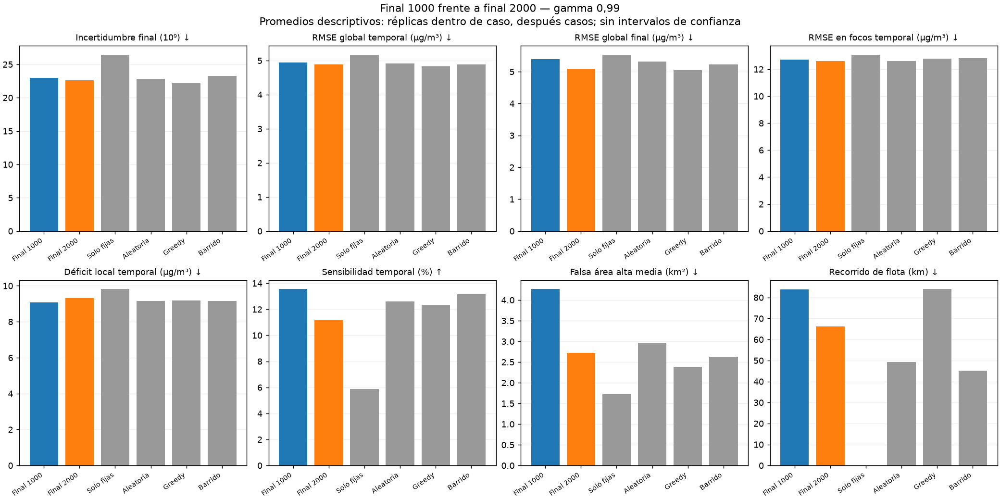
| Política | RMSE final | Déficit temporal | Sensibilidad (fracción) | Falsa área (km²) | Recorrido (m) | Eventos completados omitidos (fracción) |
|---|---|---|---|---|---|---|
| Final 1000 | 5.4 | 9.069 | 0.1356 | 4.267 | 8.378e+04 | 0.8209 |
| Final 2000 | 5.096 | 9.315 | 0.1116 | 2.727 | 6.614e+04 | 0.8651 |
| Solo fijas | 5.536 | 9.824 | 0.05869 | 1.739 | 0 | 0.9631 |
| Aleatoria | 5.312 | 9.155 | 0.126 | 2.963 | 4.93e+04 | 0.9264 |
| Greedy | 5.04 | 9.185 | 0.1235 | 2.388 | 8.405e+04 | 0.9348 |
| Barrido | 5.234 | 9.146 | 0.1316 | 2.624 | 4.526e+04 | 0.92 |

| Política | Referencia | Meta (%) | Reducción varianza (%) | Reducción RMSE (%) | Reducción recorrido (%) |
|---|---|---|---|---|---|
| Final 1000 | fixed | 20 | 13.13 | 2.449 | — |
| Final 1000 | random | 20 | -0.7772 | -1.662 | -69.94 |
| Final 1000 | greedy | 20 | -3.69 | -7.158 | 0.331 |
| Final 1000 | sweep | 20 | 1.173 | -3.183 | -85.1 |
| Final 2000 | fixed | 20 | 14.49 | 7.955 | — |
| Final 2000 | random | 20 | 0.8064 | 4.077 | -34.17 |
| Final 2000 | greedy | 20 | -2.061 | -1.109 | 21.31 |
| Final 2000 | sweep | 20 | 2.725 | 2.642 | -46.14 |
Porcentajes calculados después de agregar las métricas. Reducir recorrido un 20 % no equivale a cumplir el indicador general. Las falsas alarmas deben acompañar sensibilidad y déficit. El retraso solo entre detectados no resume los eventos omitidos o censurados.
Tabla completa CSV · Referencias CSV · Figura SVG
Cambios agregados · Diferencias por caso. Cambios = candidato menos referencia; el signo favorable depende de la métrica.
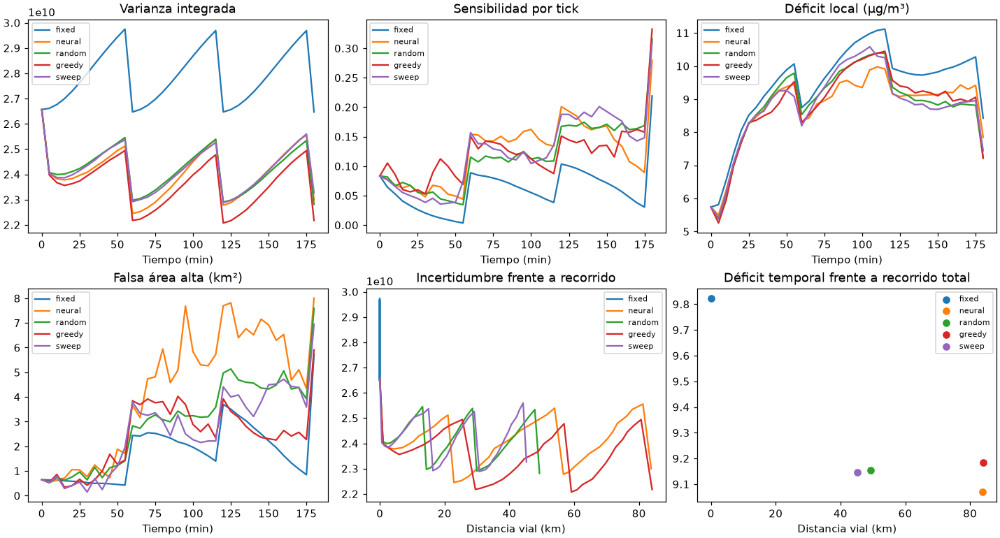

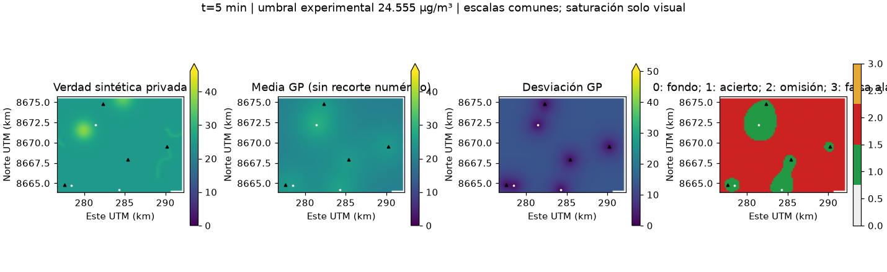
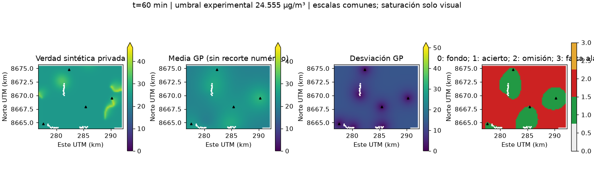


Umbral experimental: 24.555473 µg/m³. No es sanitario.
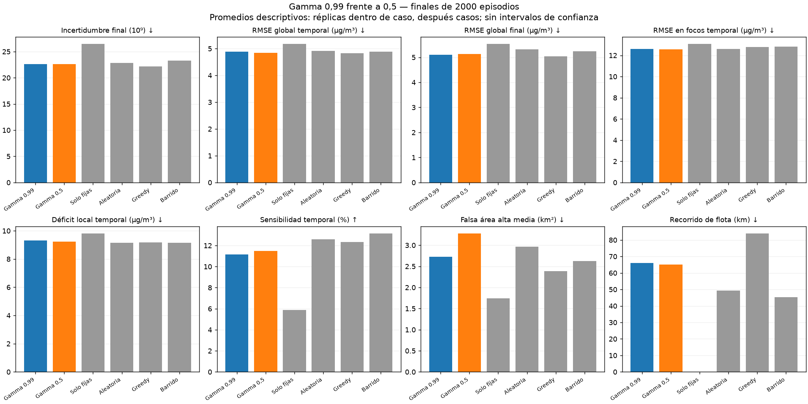
| Política | RMSE final | Déficit temporal | Sensibilidad (fracción) | Falsa área (km²) | Recorrido (m) | Eventos completados omitidos (fracción) |
|---|---|---|---|---|---|---|
| Gamma 0,99 | 5.096 | 9.315 | 0.1116 | 2.727 | 6.614e+04 | 0.8651 |
| Gamma 0,5 | 5.126 | 9.242 | 0.1149 | 3.283 | 6.52e+04 | 0.9104 |
| Solo fijas | 5.536 | 9.824 | 0.05869 | 1.739 | 0 | 0.9631 |
| Aleatoria | 5.312 | 9.155 | 0.126 | 2.963 | 4.93e+04 | 0.9264 |
| Greedy | 5.04 | 9.185 | 0.1235 | 2.388 | 8.405e+04 | 0.9348 |
| Barrido | 5.234 | 9.146 | 0.1316 | 2.624 | 4.526e+04 | 0.92 |

| Política | Referencia | Meta (%) | Reducción varianza (%) | Reducción RMSE (%) | Reducción recorrido (%) |
|---|---|---|---|---|---|
| Gamma 0,99 | fixed | 20 | 14.49 | 7.955 | — |
| Gamma 0,99 | random | 20 | 0.8064 | 4.077 | -34.17 |
| Gamma 0,99 | greedy | 20 | -2.061 | -1.109 | 21.31 |
| Gamma 0,99 | sweep | 20 | 2.725 | 2.642 | -46.14 |
| Gamma 0,5 | fixed | 20 | 14.53 | 7.405 | — |
| Gamma 0,5 | random | 20 | 0.8497 | 3.504 | -32.25 |
| Gamma 0,5 | greedy | 20 | -2.016 | -1.714 | 22.44 |
| Gamma 0,5 | sweep | 20 | 2.768 | 2.06 | -44.04 |
Porcentajes calculados después de agregar las métricas. Reducir recorrido un 20 % no equivale a cumplir el indicador general. Las falsas alarmas deben acompañar sensibilidad y déficit. El retraso solo entre detectados no resume los eventos omitidos o censurados.
Tabla completa CSV · Referencias CSV · Figura SVG
Cambios agregados · Diferencias por caso. Cambios = candidato menos referencia; el signo favorable depende de la métrica.

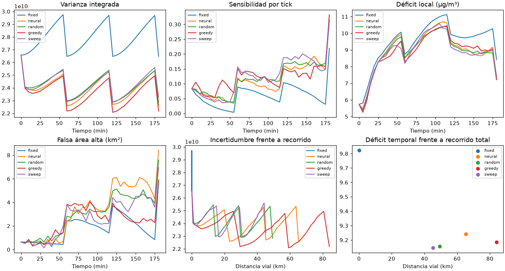


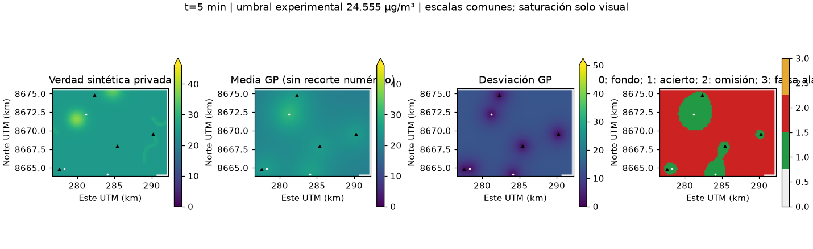
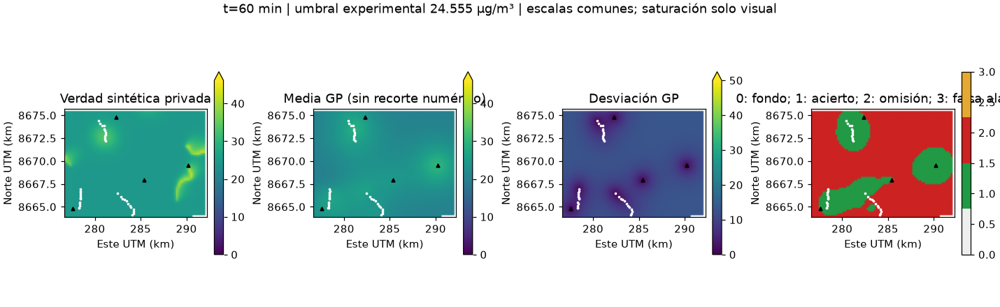
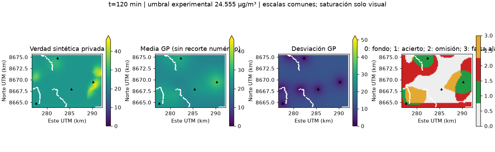

Umbral experimental: 24.555473 µg/m³. No es sanitario.
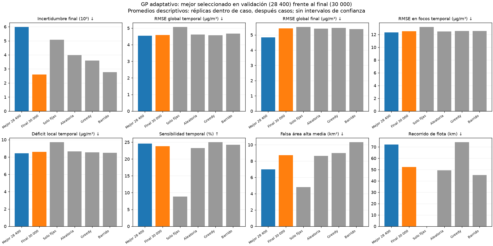
| Política | RMSE final | Déficit temporal | Sensibilidad (fracción) | Falsa área (km²) | Recorrido (m) | Eventos completados omitidos (fracción) |
|---|---|---|---|---|---|---|
| Mejor 28 400 | 4.832 | 8.441 | 0.2456 | 6.972 | 7.21e+04 | 0.7781 |
| Final 30 000 | 5.43 | 8.608 | 0.238 | 8.729 | 5.224e+04 | 0.8003 |
| Solo fijas | 5.523 | 9.718 | 0.08831 | 4.802 | 0 | 0.8529 |
| Aleatoria | 5.409 | 8.642 | 0.2322 | 8.651 | 4.93e+04 | 0.7994 |
| Greedy | 5.458 | 8.537 | 0.2501 | 8.983 | 7.423e+04 | 0.7454 |
| Barrido | 5.386 | 8.477 | 0.2421 | 10.32 | 4.526e+04 | 0.7496 |

| Política | Referencia | Meta (%) | Reducción varianza (%) | Reducción RMSE (%) | Reducción recorrido (%) |
|---|---|---|---|---|---|
| Mejor 28 400 | fixed | 20 | -17.79 | 12.52 | — |
| Mejor 28 400 | random | 20 | -50.08 | 10.67 | -46.25 |
| Mejor 28 400 | greedy | 20 | -66.26 | 11.48 | 2.875 |
| Mejor 28 400 | sweep | 20 | -115.9 | 10.29 | -59.29 |
| Final 30 000 | fixed | 20 | 48.9 | 1.693 | — |
| Final 30 000 | random | 20 | 34.89 | -0.386 | -5.975 |
| Final 30 000 | greedy | 20 | 27.87 | 0.5217 | 29.62 |
| Final 30 000 | sweep | 20 | 6.351 | -0.8122 | -15.43 |
Porcentajes calculados después de agregar las métricas. Reducir recorrido un 20 % no equivale a cumplir el indicador general. Las falsas alarmas deben acompañar sensibilidad y déficit. El retraso solo entre detectados no resume los eventos omitidos o censurados.
Tabla completa CSV · Referencias CSV · Figura SVG
Cambios agregados · Diferencias por caso. Cambios = candidato menos referencia; el signo favorable depende de la métrica.


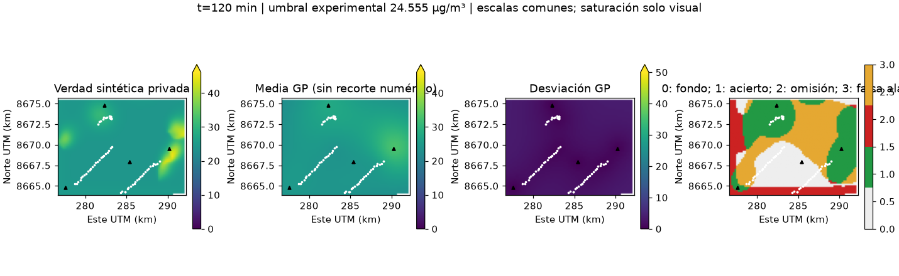


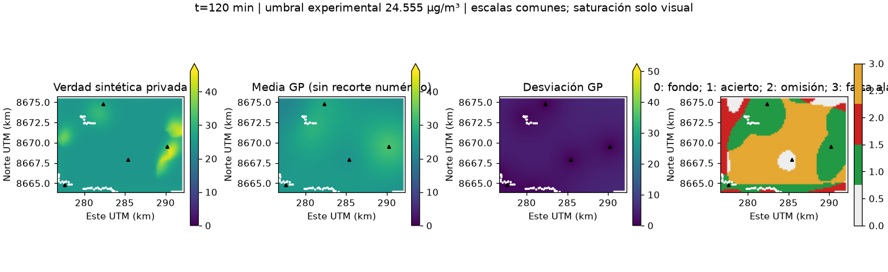

Umbral experimental: 24.555473 µg/m³. No es sanitario.
Cada método conserva sus propias referencias y su estimador. La varianza es una predicción del GP; reducirla al cambiar la amplitud no demuestra menor error. El contraste combina estimador, recompensa y entrenamiento.
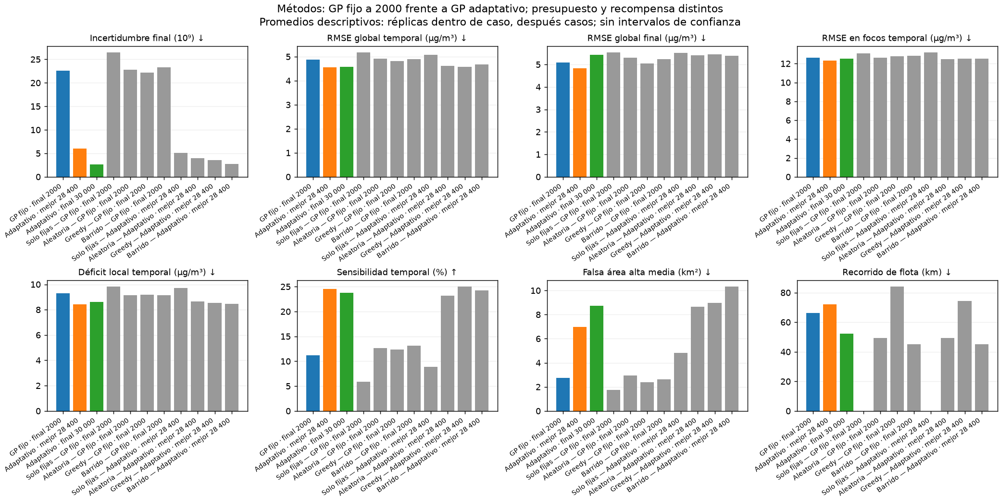
| Política | RMSE final | Déficit temporal | Sensibilidad (fracción) | Falsa área (km²) | Recorrido (m) | Eventos completados omitidos (fracción) |
|---|---|---|---|---|---|---|
| GP fijo · final 2000 | 5.096 | 9.315 | 0.1116 | 2.727 | 6.614e+04 | 0.8651 |
| Adaptativo · mejor 28 400 | 4.832 | 8.441 | 0.2456 | 6.972 | 7.21e+04 | 0.7781 |
| Adaptativo · final 30 000 | 5.43 | 8.608 | 0.238 | 8.729 | 5.224e+04 | 0.8003 |
| Solo fijas — GP fijo · final 2000 | 5.536 | 9.824 | 0.05869 | 1.739 | 0 | 0.9631 |
| Aleatoria — GP fijo · final 2000 | 5.312 | 9.155 | 0.126 | 2.963 | 4.93e+04 | 0.9264 |
| Greedy — GP fijo · final 2000 | 5.04 | 9.185 | 0.1235 | 2.388 | 8.405e+04 | 0.9348 |
| Barrido — GP fijo · final 2000 | 5.234 | 9.146 | 0.1316 | 2.624 | 4.526e+04 | 0.92 |
| Solo fijas — Adaptativo · mejor 28 400 | 5.523 | 9.718 | 0.08831 | 4.802 | 0 | 0.8529 |
| Aleatoria — Adaptativo · mejor 28 400 | 5.409 | 8.642 | 0.2322 | 8.651 | 4.93e+04 | 0.7994 |
| Greedy — Adaptativo · mejor 28 400 | 5.458 | 8.537 | 0.2501 | 8.983 | 7.423e+04 | 0.7454 |
| Barrido — Adaptativo · mejor 28 400 | 5.386 | 8.477 | 0.2421 | 10.32 | 4.526e+04 | 0.7496 |

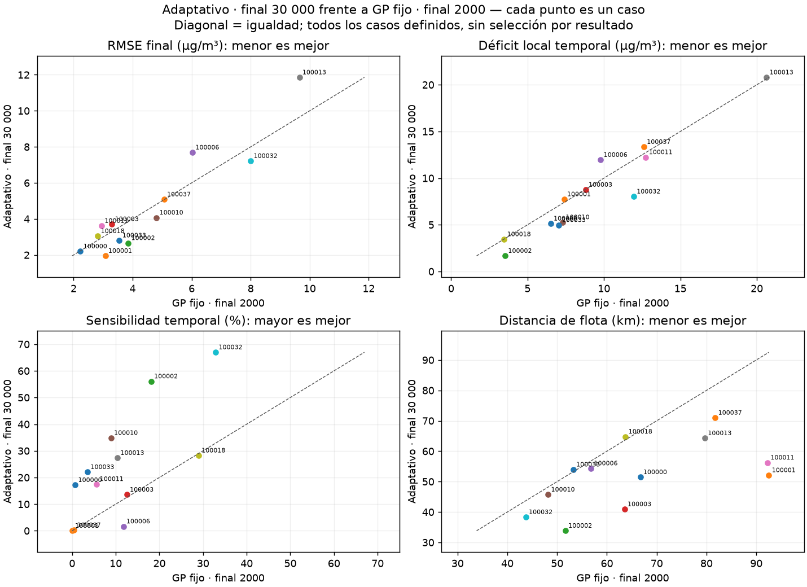
| Política | Referencia | Meta (%) | Reducción varianza (%) | Reducción RMSE (%) | Reducción recorrido (%) |
|---|---|---|---|---|---|
| GP fijo · final 2000 | fixed | 20 | 14.49 | 7.955 | — |
| GP fijo · final 2000 | random | 20 | 0.8064 | 4.077 | -34.17 |
| GP fijo · final 2000 | greedy | 20 | -2.061 | -1.109 | 21.31 |
| GP fijo · final 2000 | sweep | 20 | 2.725 | 2.642 | -46.14 |
| Adaptativo · mejor 28 400 | fixed | 20 | -17.79 | 12.52 | — |
| Adaptativo · mejor 28 400 | random | 20 | -50.08 | 10.67 | -46.25 |
| Adaptativo · mejor 28 400 | greedy | 20 | -66.26 | 11.48 | 2.875 |
| Adaptativo · mejor 28 400 | sweep | 20 | -115.9 | 10.29 | -59.29 |
| Adaptativo · final 30 000 | fixed | 20 | 48.9 | 1.693 | — |
| Adaptativo · final 30 000 | random | 20 | 34.89 | -0.386 | -5.975 |
| Adaptativo · final 30 000 | greedy | 20 | 27.87 | 0.5217 | 29.62 |
| Adaptativo · final 30 000 | sweep | 20 | 6.351 | -0.8122 | -15.43 |
Porcentajes calculados después de agregar las métricas. Reducir recorrido un 20 % no equivale a cumplir el indicador general. Las falsas alarmas deben acompañar sensibilidad y déficit. El retraso solo entre detectados no resume los eventos omitidos o censurados.
Tabla completa CSV · Referencias CSV · Figura SVG
Cambios agregados · Diferencias por caso. Cambios = candidato menos referencia; el signo favorable depende de la métrica.


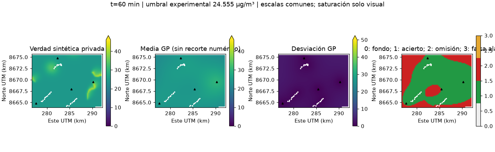


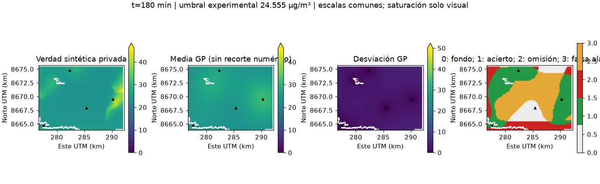
El adaptativo completó 30 000 episodios. Se reprodujeron los RMSE de 28 400 (4,831652) y 30 000 (5,429510) desde sus pesos y se evaluaron ambos frente a las mismas referencias adaptativas. El 28 400 fue seleccionado en estos casos de validación: no es una prueba independiente. El contraste con GP fijo cambia estimador, recompensa, exploración y presupuesto. Los resultados no demuestran una mejora general del 20 %. El replay histórico final permanece pendiente.